Feuerwehr Wasser
Feuerwehr WasserPläne & Pegel
§ Dienstvorschriften im H₂O Portal
Offizielle PDF-Links der Landesfeuerwehrschule, Titel, Quellenstand und Reihenfolge zentral pflegen. Die Grundauswahl steht ohne Einrichtung bereit.
Feuerwehr Wasser
Hydrantenplan
Wasserentnahmestellen im Überblick
Original: OneDrive → Feuerwehr Share → Webseite → Hydrantenplan → Hydrantenplan-Wasser.pdf. Nach Austausch der Datei hier erneut abgleichen.
Verwaltung und OneDrive-Verbindung erforderlich.
Landkreis Emmendingen
Wasserentnahme aus Gewässern
Pegel Gutach / Elz
Bei einem Abfluss von 1,58 m³/s oder weniger gilt das Entnahmeverbot.
Entscheidend ist der „Abfluss“ im „Tagesmittel am Vortag“. Der aktuelle Messwert und der Wasserstand sind hierfür nicht maßgeblich.
Abfluss und Tagesmittelwert auf NIZ öffnen ↗Öffnet separat. Zum Zurückkehren den neuen Tab schließen oder zurück zur Hauptanwendung wechseln.
Für das Verbot zählt weiterhin der NIZ-Tagesmittelwert des Vortags ↗.
Das Verbot betrifft die erlaubnisfreie Wasserentnahme aus öffentlichen oberirdischen Gewässern im Landkreis Emmendingen. Der Rhein ist ausgenommen. Für erlaubnispflichtige Entnahmen gelten gesonderte Regelungen.
Hinweis: Diese Ansicht zeigt den Grenzwert, aber keinen Live-Messwert. Bitte den Tagesmittelwert direkt beim Niedrigwasser-Informationszentrum Baden-Württemberg prüfen.
Quelle: Landratsamt Emmendingen ↗ · Erläuterung zum Tagesmittel ↗
Freiwillige Feuerwehr · Abt. Wasser
Jahresprobenplan
Hellgelb: Ferien · Apricot: Sonntag · Terminfarben nach Art · Feiertage mit Namen
Veranstaltungen
🎭 Theaternachmittag
Bestellungen werden im persönlichen H₂O-Portal aufgenommen.
🔒 Kasse & Verwaltung
Veranstaltung · Theater
Verwaltung
Kasseneingabe Live-Bestellungen
📅 Name & Bestellannahme
Es kann eine Veranstaltung gleichzeitig geöffnet sein. Bereits bestätigte Bestellungen behalten ihre ursprünglichen Preise.
🍽️ Preisliste Artikel, Kategorien und Preise
Rubrikfarben ändern
Preisliste importieren
Spalten: Artikel, Preis; optional Größe und Rubrik. Auch die Kassencheckliste wird erkannt. Der Import erscheint zuerst als bearbeitbare Vorschau. Rubriken direkt eingeben, etwa Essen, Getränke oder Alkoholfrei. Die Artikel sind nach Rubriken gruppiert. Häufige Artikel mit „Nach oben“ zuerst anordnen; danach „Veranstaltung & Preisliste speichern“ wählen.
🔔 Benachrichtigungen Signalton für neue Bestellungen
⚙️ Zurücksetzen Bestellungen löschen
Veranstaltung zurücksetzen
Löscht sämtliche Bestellungen und Kassenübertragungen der ausgewählten Veranstaltung unwiderruflich. Die Veranstaltung wird geschlossen, die Preisliste bleibt erhalten. Bei Bedarf vorher unter „Auswertung“ als CSV exportieren.
Getränke
Überblick der Änderungen
Gib deine PIN ein, um deine persönliche Mitgliederkarte zu öffnen.
PIN vergessen? Bitte von der Mitgliederverwaltung neu setzen lassen.
Getränke-PIN
Freiwilliger Schutz deiner Getränkekarte am Gerätehaus-iPad. Deinen H₂O-Zugang verwaltet die Feuerwehrverwaltung.
Letzte Buchungen
PIN freiwillig einrichten
Du entscheidest selbst, ob du den Zugang zu deiner persönlichen Mitgliederkarte mit einer PIN schützt. Ohne PIN öffnet sich deine Karte direkt. Deine Buchungen bleiben erhalten.
Schulden bezahlen
Gesamtschulden
Bar: Geld zuerst in die Getränkekasse legen, dann bestätigen.
Gutschrift nach Prüfung durch die Verwaltung.
Bar bezahlen
Bar bezahlen
Geld in die Getränkekasse legen und anschließend bestätigen.
Mit PayPal bezahlen
Empfänger: Feuerwehr Wasser
PayPal-ZahlungslinkQR-Code scannen oder PayPal-Link öffnen. Namen angeben. Gutschrift nach Prüfung durch die Verwaltung.
Zahlung gespeichert
Deine verbleibenden Schulden:
Anwesenheit
Terminart auswählen
Terminart wählen.
Anwesenheit erfassen
Personen markieren → Auswahl übernehmen.
Nicht gewähltFunktion auswählen
Funktion wählen → Speichern.
Anmeldungen für diesen Termin
0| Zeit | Name | Funktion / Status |
|---|
Noch keine Anmeldung vorhanden.
Übersicht
Verwaltung
Verwaltung
Backlog
Zurückgestellte Funktionen · Stand 29.10.2026
Später wieder aufgreifen
Diese Übersicht bleibt als Merkliste erhalten. Eine Aktivierung erfolgt erst mit einer bewusst veröffentlichten Änderung. Eine freiwillige Freischaltung einzelner Mitglieder ist eine spätere Ausbaustufe und derzeit nicht aktiv.
Einstellungen
Einstellungen
Getränkeverwaltung
Konten und Buchungen
Getränke-PINs
Persönliche Getränke-PINs verwalten. H₂O-Zugänge und die gemeinsame technische Verbindung findest du unter Verwaltung → H₂O Portal.
Administration
H₂O Portal
Persönliche Zugänge der Abteilung Wasser.
H₂O auf dem Handy installieren
Diesen gemeinsamen QR-Code mit der Handykamera scannen. iPhone/iPad und Android erhalten den passenden Installationsweg. Er enthält keinen persönlichen Zugang.
Nach der Installation mit dem eigenen Passkey oder Passwort anmelden. Neue Zugänge separat nach persönlicher Identitätsprüfung freigeben.
Push & Kalenderabos
Push zeigt angemeldete Geräte. Eine Zustellung kann durch die Handy-Einstellungen verhindert sein. Beim Kalender wird der letzte erfolgreiche Abruf des persönlichen H₂O-Abos erfasst. Das ist kein Nachweis, dass das Abo weiterhin eingerichtet ist; ein Löschen in der Kalender-App wird nicht gemeldet. Bestehende Abos erscheinen nach ihrem nächsten Abruf.
Übersicht noch nicht geladen.
Persönlicher Portalzugang
Identität persönlich prüfen und die einmalige Einrichtung freigeben. Passkey oder Benutzername und Passwort gelten für das gesamte persönliche Portal und WhatsApp-Terminlinks. Die Freigabe nur diesem Mitglied übergeben. Sie ist keine App-Installation.
Persönliches Portal öffnenInstallation und persönliche Verifizierung
- App installieren: Den gemeinsamen Installations-QR oben mit der normalen Handykamera scannen. Android öffnet den Google-Play-Test. Zuvor das Google-Konto des Mitglieds einmal in die Testerliste aufnehmen; das Mitglied nimmt am Test teil und installiert selbst. Der Apple-Store-Link folgt nach Freigabe.
- Neuen Zugang freigeben: Hier unter „Persönlicher Portalzugang“ die Identität vor Ort prüfen, das richtige Mitglied auswählen und „Zugangseinrichtung freigeben“ wählen.
- Persönlichen QR scannen: Das Mitglied scannt ihn mit der normalen Handykamera außerhalb der App und öffnet den Link. In H₂O einen Passkey oder Benutzernamen und Passwort einrichten. Die einmalige Freigabe gilt 30 Minuten. Keine E-Mail-Einladung nötig.
- Schon eingerichtet? In H₂O direkt mit dem vorhandenen Zugang anmelden, auch auf einem weiteren Gerät. Kalenderabo und Mitteilungen sind freiwillig. „Verlorenen Zugang sperren und wiederherstellen“ nur bei tatsächlich verlorenem Zugang verwenden.
Einstellungen
Kalender
Kommende Termine
Laufende Termine bleiben bis zu ihrem Ende sichtbar.
Automatische Probe-Erinnerung
Für freigegebene Proben und Sonderproben. Berliner Ortszeit; Sommer- und Winterzeit werden berücksichtigt. Entschuldigte erhalten keine Nachricht.
Versand beginnt zur gewählten Zeit und erfolgt schrittweise. Änderungen gelten nur für noch nicht fällige Erinnerungen. Bereits erfolgte automatische Erinnerungen werden nicht erneut gesendet.
Keine kommenden Termine.
Gruppen
Gruppen anlegen und Mitglieder zuordnen. Beim Termin eine oder mehrere passende Gruppen auswählen; einzelne Personen lassen sich ergänzen oder ausschließen.
Verfügbare Gruppen
Google-Verbindung
Verbindung wird geprüft …
Kalender kurz erklärt
Google importieren, hier nachbearbeiten
- Termine: „Bearbeiten“ öffnet Terminart, Kleidung, Ort, Gruppen und persönliche Ausnahmen. „Speichern“ sichert die Anpassung in H₂O; sie bleibt bei späteren Importen erhalten.
- Titel und Zeiten: Im geöffneten Bearbeitungsbereich „Google-Termin bearbeiten“ wählen. Titel, Datum, Uhrzeit und ursprüngliche Beschreibung werden im gemeinsamen Google-Kalender gespeichert. Dafür das eigene berechtigte Konto unter „Verbindung“ verbinden.
- Zusatzinfo: Im Bearbeitungsbereich „Zusatzinfo bearbeiten“ öffnen. Die Google-Beschreibung kann übernommen oder für H₂O ergänzt werden. Zusatzinfos werden separat gespeichert.
Die Terminfarben kommen aus Google. Die Farbanbindung und technische Einstellungen liegen hier unter „Verbindung“. Bei einem Verbindungsfehler bleibt eine Ersatzdarstellung verfügbar.
Die H₂O-Erweiterung bietet die Auswahl auch in Google Kalender am Computer. Gruppen und Kleidungsangaben im privaten Google-Kalender sehen die dort berechtigten Personen; individuelle Ausnahmen bleiben in H₂O.
„Google-Angaben übernehmen“ entfernt eigene H₂O-Einstellungen für den Termin. Vorher Gruppen und persönliche Ausnahmen prüfen. Ganze Serien und Termine mit Google-Gästen direkt in Google bearbeiten.
Google-Erweiterung einrichtenGeschützter Bereich
Administration
Bitte Admin-Passwort eingeben.
Falsches Passwort.
Konfiguration
Administration
Probe steuern
Laufende Probe zurücksetzen und Verwaltungsaktionen ausführen.
Aktueller Probenstatus
Live-Übersicht der aktuellen Probe. Zur Teilnehmeransicht gelangst du über „Start“ in der oberen Leiste.
Anwesenheit & Funktionsziele
Jährliche Mindestziele zentral einstellen.
Jährliche Funktionsziele
Lege fest, wie oft jede freigegebene Funktion pro Mitglied und Kalenderjahr mindestens übernommen werden soll. Der Wert 0 deaktiviert das Ziel.
Daten & Sicherheit
CSV-Speicherort und Admin-Passwort verwalten.
CSV-Speicherort
Wähle den Ordner, in dem die CSV-Auswertungen gespeichert werden sollen.
Admin-Passwort ändern
Verwende ein eigenes Admin-Passwort mit mindestens 8 Zeichen und gib es nur an berechtigte Personen weiter.
Mitglieder
Mitglieder anlegen und persönliche Berechtigungen verwalten.
Mitglied hinzufügen
Mitglieder & Funktionen
Besetzungsempfehlung
Taktik
Noch keine anwesenden Teilnehmenden erfasst.
Person und Zielplatz antippen.
Gruppenbesetzung
Einheitsstärke bis 1/8Noch keine taktische Einheit

Staffelbesetzung
Einheitsstärke bis 1/5Noch keine taktische Einheit

Atemschutz
Weitere Anwesende
0Keine weiteren anwesenden Personen.
Besetzung prüfen. Erst danach wird die Probe abgeschlossen und ein ZIP-Terminpaket gespeichert.
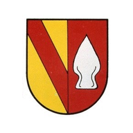
Auswertung
Statistik
Noch keine abgeschlossenen Termine oder Einsätze vorhanden.
Feuerwehr
Getränke ·
Wie wird gerechnet?
Gesamter gespeicherter Verbrauch aller Getränkekonten, ohne Mitgliedsnamen. Rückgenommene Tippfehler sind abgezogen. Zahlungen ändern die Verbrauchsmenge nicht.
Getränkeverbrauch wird beim Öffnen geladen.
Verbrauch je Monat
| Monat | Bier · Stück / € | Wein · Gläser / € | Gesamt · Stück / € | Noch offen |
|---|
Treuepunkte
Wie wird gerechnet?
Verdiente und eingelöste Punkte im ausgewählten Jahr, über alle Getränkekonten. Stornierte Zahlungen und zurückgenommene Getränke sind abgezogen und dem ursprünglichen Buchungsmonat zugeordnet. Frühere Bonusgutschriften werden in Treuepunkte umgerechnet.
Treuepunkte je Monat
| Monat | Einzahlungen · Punkte | Challenge · Punkte | Geburtstag · Punkte | Verdient · gesamt | Eingelöst · Punkte |
|---|
Termine nach Grund
Noch keine abgeschlossenen Termine oder Einsätze vorhanden.
Themen im Jahr
Noch keine Ausbildungsthemen im ausgewählten Jahr erfasst.
Top 5 Teilnehmende
Noch keine auswertbaren Termine oder Einsätze vorhanden.
Atemschutzkontrollen
Teilnehmerstatistik
Teilnehmer
–
–
Funktionsziele
Für dieses Mitglied sind keine Jahresziele eingestellt.
Ausgeübte Funktionen
Noch keine Funktionen im ausgewählten Jahr erfasst.
Termine nach Art
Noch keine Termine im ausgewählten Jahr erfasst.
Letzte Teilnahmen der ausgewählten Person
Noch keine Teilnahmen im ausgewählten Jahr erfasst.
Datengrundlage: geladene abgeschlossene Berichte.
Statistik Altersmannschaft
Getrennte Auswertung, ohne Einfluss auf die Statistik der aktiven Einsatzabteilung.
Anwesenheit Altersmannschaft
Noch keine Mitglieder der Altersmannschaft vorhanden.
Offene Funktionsziele
Alle eingestellten Funktionsziele sind erreicht.
Geschützter Bereich
Berichte & Datensicherung
Bitte denselben Admin-Passwort eingeben.
Falsches Passwort.
Datensicherung
Berichte & Datensicherung
Abgeschlossene CSV-Dateien und Sicherungen zentral verwalten.
Lokalen Sicherungspunkt wiederherstellen
Sicherungspunkte
Letzten lokalen App-Stand wiederherstellen. Dies ersetzt keine OneDrive- oder Kontodienst-Sicherung.
Berichte & Datensicherung
0Die letzten 30 erfolgreichen Exporte werden lokal gespeichert.
App-Datensicherung
Sichert Mitglieder, Ziele, Tagesdaten, Archiv und gespeicherte Dokumente. Getränkekonten, Getränke-PINs und Admin-Passwort sind nicht enthalten.
Speicherort für Backups
Kein Backup-Ordner ausgewählt
Backups werden bevorzugt direkt in diesem Ordner gespeichert. Falls das nicht möglich ist, öffnet sich Teilen oder Download.
Die JSON-Datei kann auf dem iPad über den Teilen-Dialog direkt in OneDrive gesichert werden.
Noch keine CSV-Datei archiviert.
Abgeschlossene Termine und Einsätze
Historie
CSV- und PDF-Berichte einlesen
Wähle die Berichtsdateien aus dem gemeinsamen OneDrive-Ordner. CSV-Dateien ergänzen Historie und Statistik; gleichnamige PDF-Dateien werden dem Bericht zugeordnet.
Bereits vorhandene CSV-Berichte werden übersprungen. PDF-Dateien ohne passende CSV werden nicht als eigener Historieneintrag angelegt.
Noch kein Import auf diesem Gerät durchgeführt.
Abgeschlossene Termine und Einsätze
Noch keine abgeschlossenen Termine oder Einsätze vorhanden.
Infos
Kontakte
Ansprechpartner Feuerwehr Emmendingen
Festnetz: 7:00–16:00 Uhr · Alternativ per E-Mail
Kontakte werden beim Öffnen geladen.
Internes Verzeichnis · Quelle: OneDrive
Datenschutz & Hilfe
Datenschutz
Hilfe im Alltag
Thema antippen. Die Bilder zeigen Beispieldaten.
Termin starten und Anwesenheit erfassen
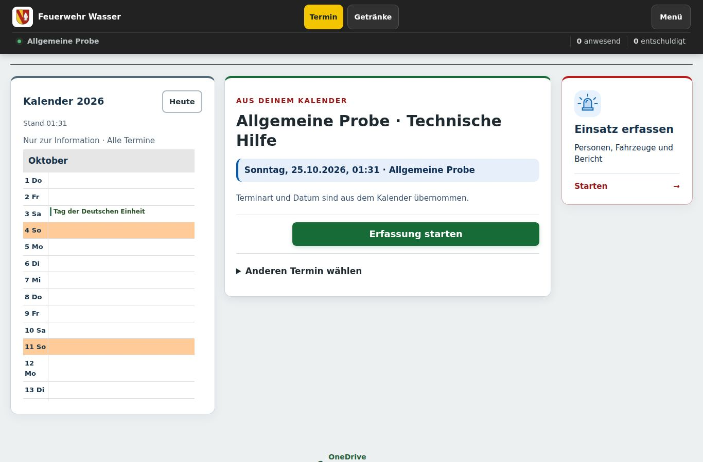
- Termin wählen
Einen geplanten Termin öffnen oder die passende Terminart wählen. „Fortsetzen“ öffnet einen laufenden Entwurf. Oben „Termin“ führt nur zur Terminübersicht zurück; die Anwendung und die Verbindung werden nicht neu gestartet.
- Anwesenheit übernehmen
Personen als anwesend, entschuldigt oder nicht betroffen markieren und die Auswahl übernehmen. Funktionen und Zeiten bei Bedarf ergänzen.
Termin abschließen
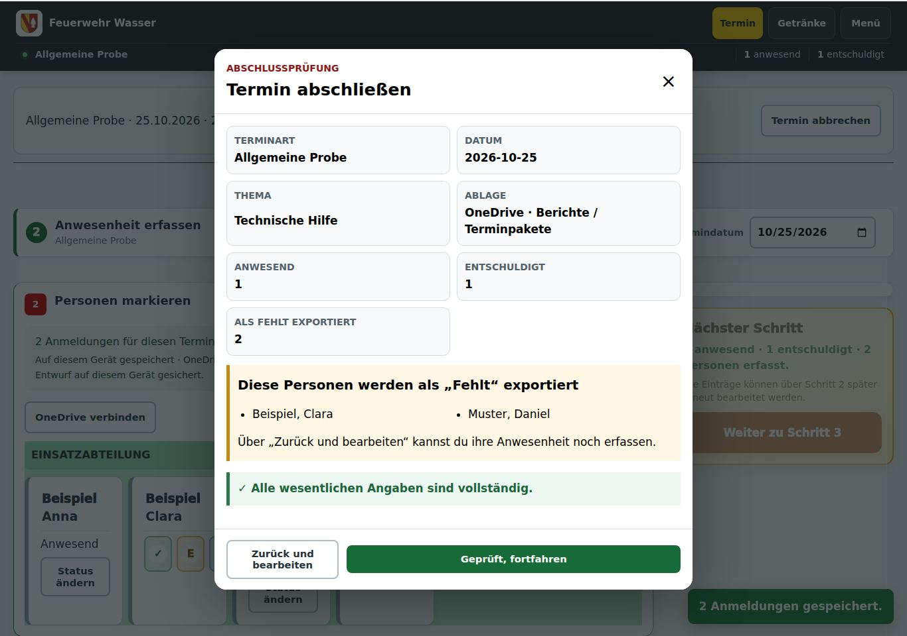
- Bericht prüfen
Thema und erforderliche Angaben ergänzen. Beim Einsatz auch Einsatzdaten und Anlagen prüfen.
- In OneDrive speichern
Den Abschluss bestätigen. Das Terminpaket mit CSV, PDF und Anlagen liegt unter Berichte → Terminpakete. Erst die bestätigte Speicherung schließt den Termin ab.
Berichte und Statistik
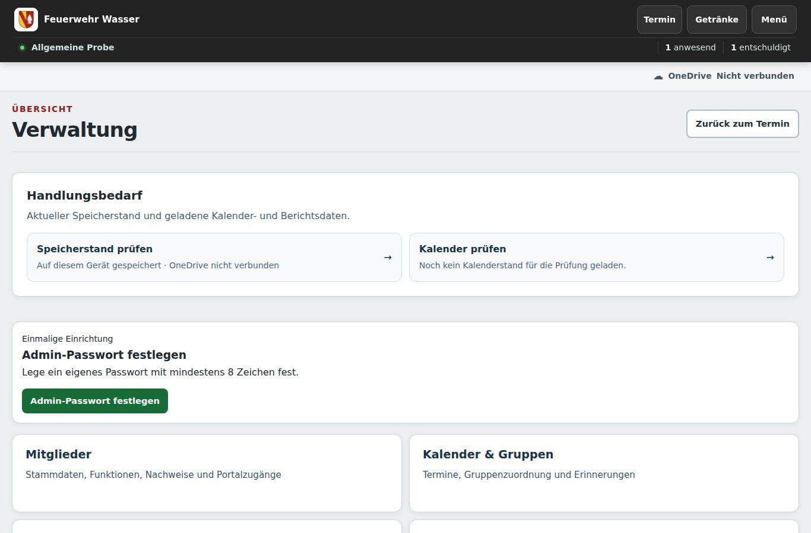
- Wiederfinden
Im Menü „Historie“ oder „Statistik“ öffnen. Berichte lassen sich ansehen und erneut ausgeben.
- Korrigieren
Den vorhandenen Bericht in der Historie korrigieren. Keinen neuen Termin als Ersatz anlegen. Änderungen am Original bestätigen.
Getränke buchen
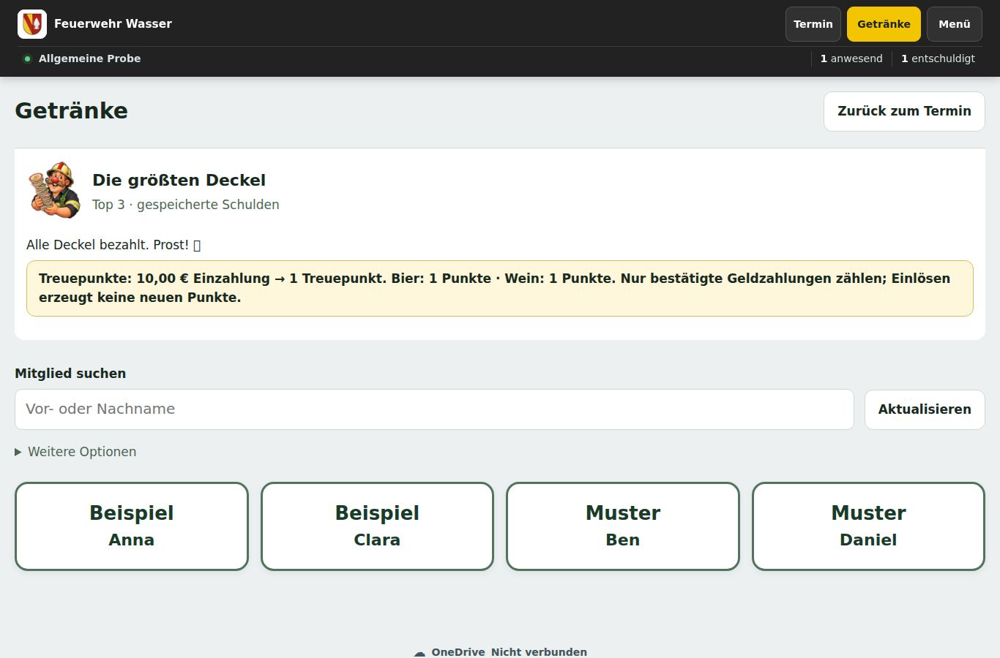
- Buchen
„Getränke“ öffnen, Mitglied auswählen und die gewünschten Getränke oder Zahlungen erfassen. Unter Konto lässt sich die freiwillige Getränke-PIN für das Gerätehaus-iPad verwalten. Die Einrichtung auf dem Handy erfolgt ausschließlich über Verwaltung → H₂O Portal.
- Bestätigung beachten
Bei unklarem Speicherstatus die vorhandene Buchung erneut prüfen. Nicht dieselbe Buchung noch einmal anlegen.
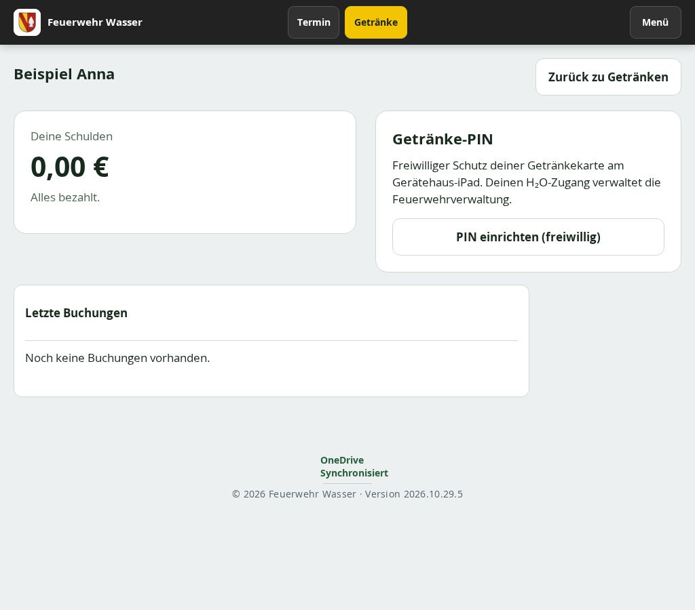
Zentrale Datensicherung
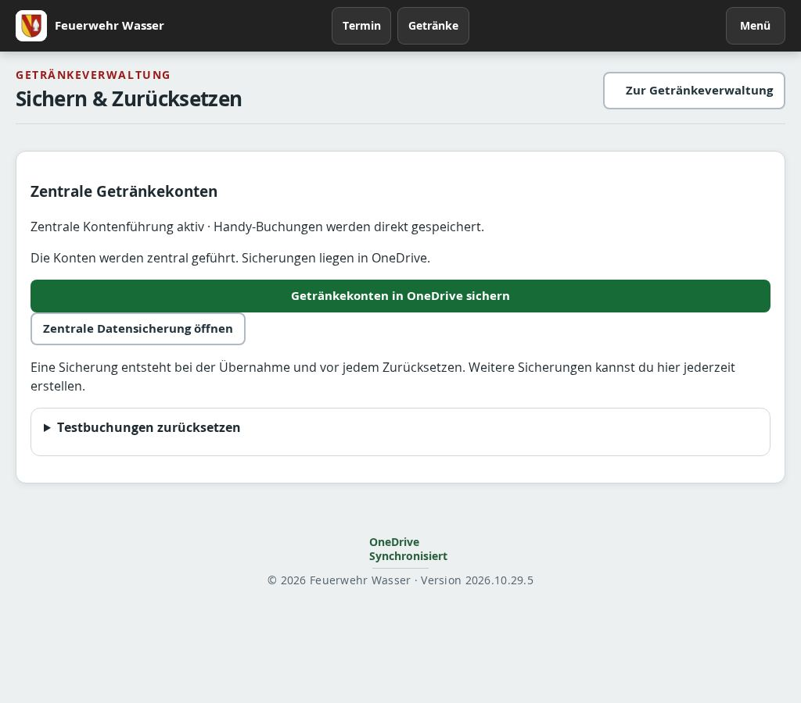
- Zusammen sichern
Verwaltung → Einstellungen → Datensicherung öffnen. Die App-Sicherung enthält Mitglieder, laufende Daten und Berichte. Bei aktiver zentraler Kontenführung wird zusätzlich eine geprüfte Sicherung der Getränkekonten, PINs und Handyzugänge in OneDrive erstellt. Der Dateiname wird in der App-Sicherung vermerkt. Schlägt diese Sicherung fehl, wird keine App-Datei ausgegeben.
- Einzeln sichern
Auf derselben Seite lassen sich Getränkekonten separat in OneDrive sichern und lokale Sicherungspunkte wiederherstellen. Testbuchungen erst nach Prüfung und Bestätigung zurücksetzen.
- Wiederherstellen
Die App-Datei stellt App-Daten wieder her. Sie überschreibt keine zentralen Konten. Zugehörige OneDrive-Sicherungen aufbewahren; weitere Portaldaten und Dienstzugänge sind nicht in der App-Datei enthalten.
Verwaltung und H₂O-Zugang
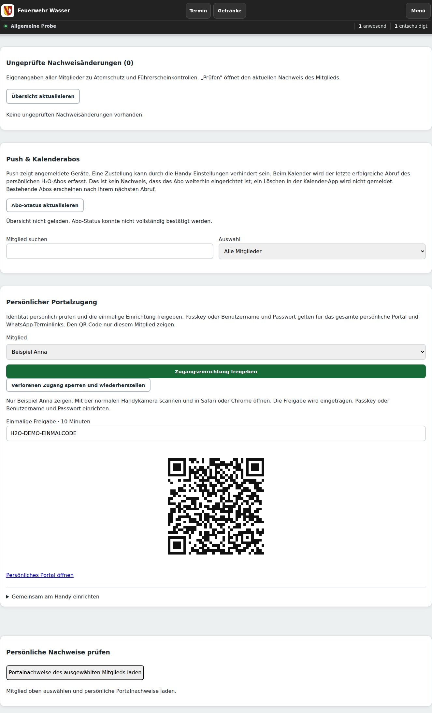
- Installieren
Verwaltung → H₂O Portal → Installations-QR anzeigen. Mit der normalen Handykamera scannen. Android öffnet den internen Play-Test: Google-Konto zuvor in die Testerliste aufnehmen; das Mitglied nimmt selbst teil und installiert. Der Apple-Store-Link folgt nach Freigabe.
- Persönlich verifizieren
Unter Persönlicher Portalzugang vor Ort die Identität prüfen, Mitglied wählen und Zugangseinrichtung freigeben. Das Mitglied scannt den persönlichen QR mit der normalen Handykamera und öffnet den Link. Einmalig 30 Minuten gültig; Passkey oder Benutzername und Passwort einrichten. Keine E-Mail versenden. Bestehende Zugänge direkt anmelden. Wiederherstellen nur bei verlorenem oder gelöschtem Zugang.
- Fitness verwalten
Unter Mitglieder die Rolle Fitnesstrainer aktivieren. Unter Kalender & Gruppen → Gruppen die Fitnessgruppe mit Mitgliedern und zuständigen Trainern belegen. Trainer sehen ausschließlich ihre Fitnesstermine und Rückmeldungen und können nur diese Gruppe erinnern. Google bleibt die Terminquelle: Terminart: Fitness, Gruppe: Fitness, Freigabe: Ja. Unter Statistik → Fitness mit demselben Kalenderjahr die Auswertung als Verwaltung laden. Zusagen und tatsächlich erfasste Anwesenheiten werden getrennt gezählt; Fitness zählt nicht zum Feuerwehrdienst.
- Automatisch erinnern
Einstellungen → Kalender & Gruppen → Termine: Automatische Probe-Erinnerung aufklappen. Einschalten, Tage vorher und Uhrzeit wählen, speichern. Berliner Ortszeit.
- Versand prüfen
Nach manuellem Versand zeigt die Rückmeldung fehlgeschlagene Push-Wege und Fehlercodes. Angenommen bestätigt den Push-Dienst, nicht die Anzeige am Handy.
- Verbindung prüfen
Technische Verbindungen liegen unter Einstellungen. Bei einem Fehler im Startabgleich OneDrive öffnen oder den Abruf wiederholen. Den bisherigen Datenordner beibehalten. Treuepunkte und Challenge sind unter Backlog pausiert.
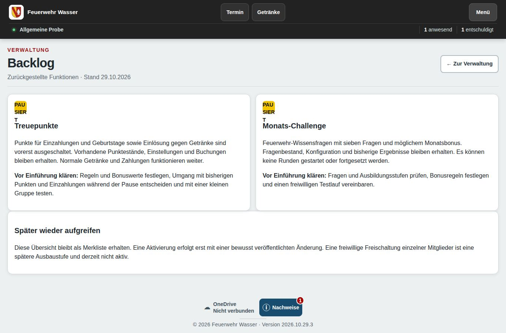
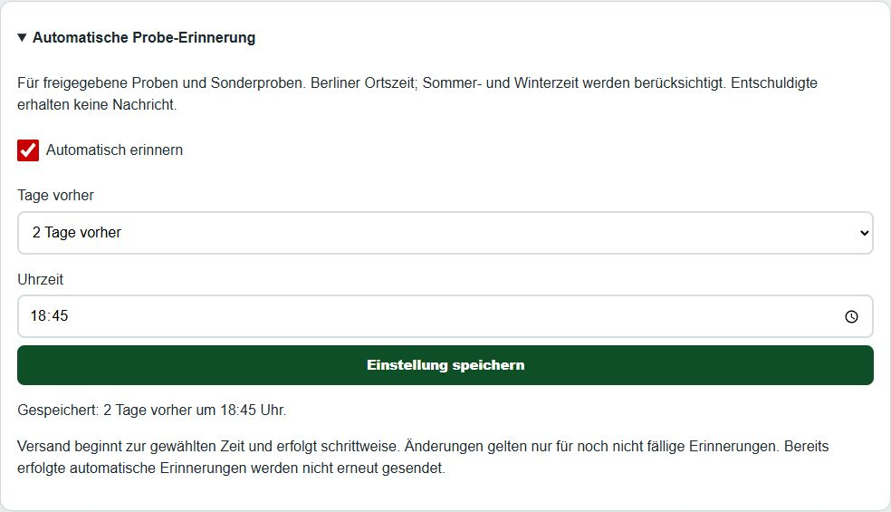
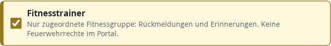
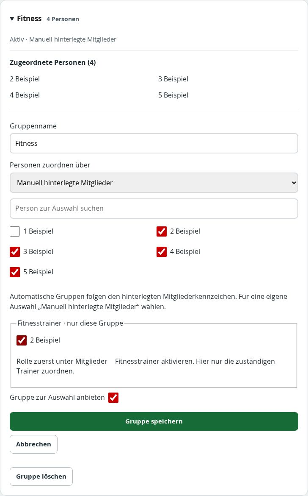
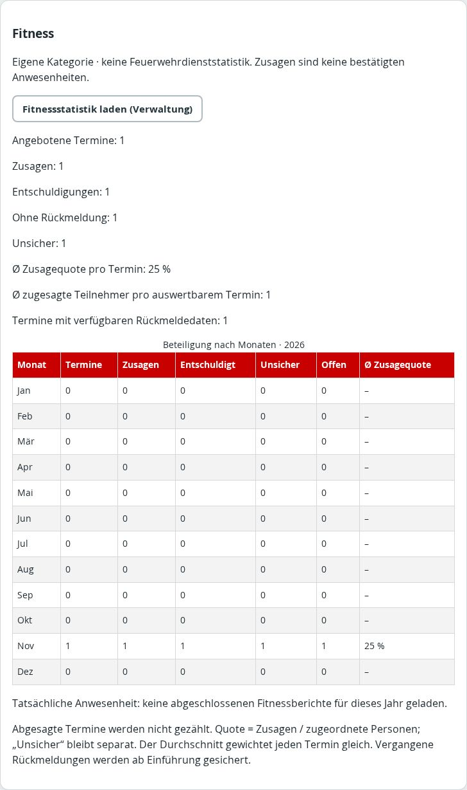
Kontakte, Hilfe und Aktualisierung
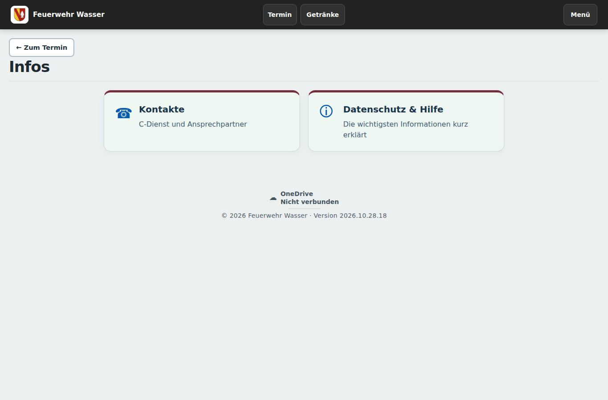
- Infos öffnen
Im Menü „Infos“ wählen. „Kontakte“ enthält C-Dienst und Ansprechpartner. „Datenschutz & Hilfe“ enthält diese kurze Anleitung.
- Kontakte abgleichen
Unter Kontakte „Kontakte aktualisieren“ wählen. Das liest OneDrive und gleicht das Verzeichnis für das H₂O Portal ab.
- Bei einem Fehler
Beim Start werden Updates automatisch geprüft und vor dem Öffnen übernommen. Unter Datenschutz & Hilfe ist eine manuelle Prüfung möglich. Bei Speicherfehlern bleiben Eingaben erhalten: Verbindung prüfen und denselben Vorgang erneut versuchen.